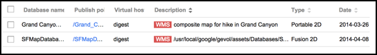
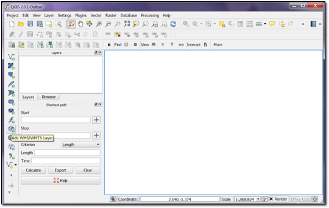
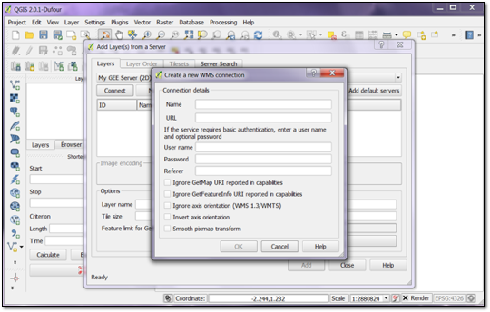
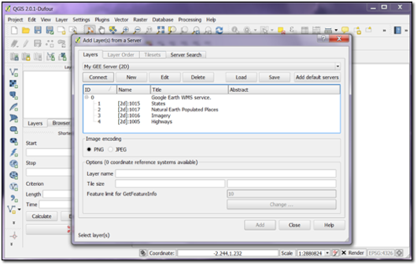
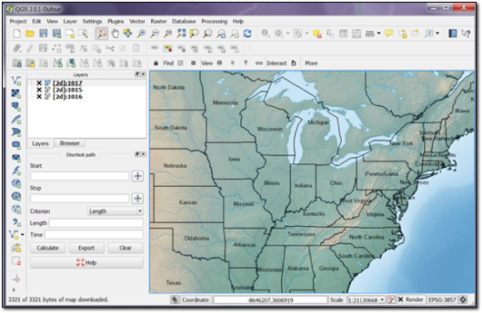
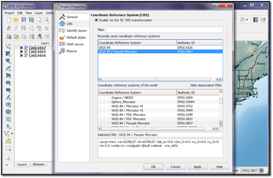

Google Earth Enterprise Documentation Home | GEE Server administration
Make Web Map Service (WMS) requests
Google Earth Enterprise Server 5.x supports the OpenGIS Web Map Service Interface Standard (WMS), which provides a standard HTTP interface to request map images from one or more published geospatial databases. Mapping images that are provided through a WMS over the Internet can show information such as weather formations and conditions, topographical maps, alternate high resolution satellite imagery and more.
One of the benefits of using the WMS standard is that supported clients can request images from multiple WMS servers and then combine those mapping images into a single view. Because the WMS standard is used to get all the images, they can easily be overlaid on one another. Supported clients include QGIS 2.0.1, ArcGIS/ArcGIS Explorer Desktop, and Google Earth Pro/EC.
- Supported Database Types
- Supported Projections
- Working with Other Projection Types
- Supported Image Formats
- Setting up Google Earth Enterprise Server 5.x Support for WMS
- Making WMS Requests to Google Earth Enterprise Server 5.x
- GetCapabilities
- GetMap
- Making WMS Requests in GIS Clients
Supported Database Types
WMS is supported only with Fusion databases: 2D Plate Carrée and Mercator
Supported Projections
For imagery over WMS, GEE Server supports Plate Carrée (EPSG code 4326) and Mercator (EPSG code 3857), as well as legacy Mercator codes EPSG:3785 and EPSG:900913.
Working with Other Projection Types
To work with other projection types, you will need to perform coordinate transformation in your client using proj.4 or another library . Alternatively, you can use an implementation of the OGC WCTS to reproject your coordinates to one of the supported ones. It's recommended that you use one of the well-known libraries since you are only transforming two pairs of coordinates for a bounding box.
Another example of working with other projections is to use a third-party application such as MapServer to reproject your native WMS on-the-fly, for example, to change your projection from Mercator to UTM zone 35.
Supported Image Formats
The following image formats are supported:
- PNG
- JPEG
Setting up Google Earth Enterprise Server 5.x Support for WMS
To enable WMS for a database that you want to publish:
- In the GEE Server Admin console, click Databases.
- Check the box next to the database you want to publish.
- Next to Serve WMS, select On.
- Click Publish.
Publishing a 2D Fusion or 2D portable database with Serve WMS turned on publishes both to GEE Server and WMS; it's not necessary to publish twice.
Databases that have WMS enabled are identified as such with a WMS label in the description.

Making WMS Requests to Google Earth Enterprise Server 5.x
The first step in creating maps via HTTP requests to Google Earth Enterprise Server 5.x is to create a connection.
To connect to Google Earth Enterprise Server 5.x, use the following URL:
http://<gee_server_name or ip address>/<target_path_of_published_db>/wms
In this example, http://localhost/merc/wms, “merc” is the target path of the published database.
Google Earth Enterprise Server 5.x supports the GetCapabilities and GetMap requests for WMS versions 1.1.1 and 1.3.0. Use GetCapabilities to first request metadata from which you can then specify the map images that you want to request using GetMap.
GetCapabilities
The GetCapabilities operation requests information about the type of services and data (“capabilities”) that are provided by Google Earth Enterprise Server 5.x.
The URL the GIS client should use to make the GetCapabilities request is as follows:
http://<hostname>/<target_path>/wms?SERVICE=WMS&REQUEST=GetCapabilities&VERSION=x.y.z
The parameters for this operation are as follows:
| Parameter | Mandatory? | Description |
|---|---|---|
| SERVICE | Yes | Service name. Value is WMS |
| REQUEST | Yes | Operation name. Value is GetCapabilities |
| VERSION | No | Service version is one of 1.1.1 or 1.3.0. If no version is submitted, the WMS request defaults to the highest serving version, in this case 1.3.0. |
An example GetCapabilities request is:
http://localhost/merc/wms?SERVICE=WMS&REQUEST=GetCapabilities&VERSION=1.1.1
The response to a GetCapabilities request includes the following information:
- Image formats supported on a published target path basis for the maps. Note that the target path database information is sent in the connection URL.
- A list of layers supported by the published target path database. Each layer provides the following information:
- Name of the layer
- Spatial projection supported
- Bounding box limitations based on the projection type
- Formats supported for any exceptions, such as invalid requests (requests not as per the international standards), service not supported etc.
An example GetCapabilities request output is as follows:
<WMT_MS_Capabilities updateSequence="0" version="1.1.1">
<Service>
<Name>OGC:WMS</Name>
<Title>Google Earth WMS service.</Title>
<OnlineResource xmlns:xlink="http://www.w3.org/1999/xlink"
xlink:type="simple" xlink:href="http://108.59.84.128/Earth/wms"/>
</Service>
<Capability>
<Request>
<GetCapabilities>
<Format>text/xml</Format>
<DCPType>
<HTTP>
<Get>
<OnlineResource xmlns:xlink="http://www.w3.org/1999/xlink"
xlink:type="simple" xlink:href="http://108.59.84.128/Earth/wms"/>
</Get>
</HTTP>
</DCPType>
</GetCapabilities>
<GetMap>
<Format>image/png</Format>
<Format>image/jpeg</Format>
<DCPType>
<HTTP>
<Get>
<OnlineResource xmlns:xlink="http://www.w3.org/1999/xlink"
xlink:type="simple" xlink:href="http://108.59.84.128/Earth/wms"/>
</Get>
</HTTP>
</DCPType>
</GetMap>
</Request>
<Exception>
<Format>application/vnd.ogc.se_xml</Format>
</Exception>
<Layer opaque="0" noSubsets="0" queryable="0">
<Title>Google Earth WMS service.</Title>
<Layer opaque="1" cascaded="0" noSubsets="0" queryable="0">
<Name>Earth</Name>
<Title>Imagery</Title>
<SRS>EPSG:4326</SRS>
<LatLonBoundingBox minx="-180.0" miny="-90.0" maxx="180.0" maxy="90.0"/>
<BoundingBox maxx="180.0" maxy="90.0" miny="-90.0" minx="-180.0"
SRS="EPSG:4326"/>
</Layer>
</Layer>
</Capability>
</WMT_MS_Capabilities>
Once you have retrieved services and data information from Google Earth Enterprise Server 5.x using GetCapabilities, you can then get the map image that you want using GetMap.
GetMap
The GetMap operation requests the map from Google Earth Enterprise Server 5.x, based on the layer data that was discovered in the GetCapabilities step.
The URL the GIS client should use to make the GetMap request is as follows:
http://<hostname>/<target_path>/wms?SERVICE=WMS&REQUEST=
GetMap&BBOX=<bounding_box_limits_of_the_requested_map>&SRS=<projection_type>&WIDTH=<width_of_requested_map>&HEIGHT=<height_of_requested_map>&LAYERS=<layer_name>&STYLES=<style_info>&FORMAT=<format_of_requested_map>&DPI=96&TRANSPARENT=TRUE
The parameters for this operation are as follows:
| Parameter | Mandatory? | Description |
|---|---|---|
| SERVICE | No | Service name. Default value is WMS. |
| REQUEST | Yes | Operation name. Value is GetMap. |
| VERSION | No | Service version is one of 1.1.1 or 1.3.0. If no version is submitted, the WMS request defaults to the highest serving version, in this case 1.3.0. |
| LAYERS | Yes | Layer name for the requested map/image. |
| BBOX | Yes | Bounding box for map extent. Value is minx, miny, maxx, maxy in units of the SRS or CRS, depending on the version. Use SRS for version 1.1.1; use CRS for version 1.3.0. |
| SRS or CRS | Yes | Spatial Reference System (SRS) of map output. Value is in form EPSG:nnn. Use SRS for version 1.1.1; use CRS as the parameter key for version 1.3.0. |
| WIDTH | Yes | Width of map output, in pixels. |
| HEIGHT | Yes | Height of map output, in pixels. |
| FORMAT | Yes | Format for the map output. PNG or JPEG are currently supported. |
| STYLE | No | Styles in which layers are to be rendered. Value is a list of required style names or empty if default styling is required. |
| DPI | No | Dots per inch. Value is client-dependent. For example, the QGIS client defaults to 96dpi. |
| TRANSPARENT | No | Determines if the map should be transparent. Values are TRUE and FALSE; default is FALSE. This parameter only applies when requesting PNG images. |
| BGCOLOR | No | Specifies the color to be used as the background (non-data) pixels of the map. The parameter is a hexadecimal encoding of an RGB value where two hexadecimal characters are used for each of red, green, and blue color values. The values can range between 00 and FF (0 and 255, base 10) for each. The format is 0xRRGGBB; either upper or lower case characters are allowed for RR, GG, and BB values. The “0x” prefix must have a lower case “x”. The default value is 0xFFFFFF, corresponding to the color white, which is used if this parameter is not included in the request. When FORMAT is a picture format, a WMS should set the background pixels to the color specified by BGCOLOR. When FORMAT is a graphic element format (which does not have an explicit background), or a picture format, a WMS should avoid use of the BGCOLOR value for foreground elements because they would not be visible against a background picture of the same color. |
An example GetMap request is:
- For version 1.1.1:
http://localhost/merc/wms?VERSION=1.1.1&SERVICE=WMS&REQUEST=GetMap&BBOX=-0037508.342789,-20039414.861177,20037508.342789,20037508.342781&SRS=EPSG:900913&WIDTH=1002&HEIGHT=1001&LAYERS=[merc]:1002&STYLES=&FORMAT=image/png&DPI=96&TRANSPARENT=TRUE - For version 1.3.0:
http://localhost/merc/wms?VERSION=1.3.0&SERVICE=WMS&REQUEST=GetMap&BBOX=-20037508.342789,-20039414.861177,20037508.342789,20037508.342781&CRS=EPSG:900913&WIDTH=1002&HEIGHT=1001&LAYERS=[merc]:1002&STYLES=&FORMAT=image/png&DPI=96&TRANSPARENT=TRUE
Making WMS Requests in GIS Clients
Any GIS client that supports WMS can query the Google Earth Server 5.x using the URLs specified in this document. The following example shows how QGIS connects to Google Earth Server 5.x, requests the server’s data, and then requests the maps to display.
Connecting to Google Earth Server 5.x WMS using QGIS
To connect the Google Earth Server 5.x using the QGIS client:
- Start the QGIS client application. At the top of the QGIS window, click the Add WMS/WMTS Layer toolbar button or from the Layer menu choose Add > Add WMS/WMTS Layer....

- Click New to establish a new WMS layer connection. A new connection window displays.

- Enter the following details:
- Name for the connection
- Connection URL as
http://<server>/<target_path_of_published_database>/wms, for example,http://localhost/my_map/wms
Optionally, supply the username and password if the database has been published to a secure virtual host set up with basic authentication.
Click OK to create a new connection.
- In the same window, click Connect to make a GetCapabilities request for a specific published target path database.
An example response for a GetCapabilities request is shown in the following window.

The GetCapabilities WMS request returns imagery and vector layers for 2D databases and only imagery for 3D databases.
-
Determine which layer you want to display, then double-click the layer name to send a GetMap request to Google Earth Enterprise Server 5.x. The following example shows a map retrieved from a GetMap request.

- If you are adding layers from a 2D database to your QGIS project, be sure to first set the Coordinate Reference System (CRS) for the project to EPSG:3857 (WGS 84 / Pseudo Mercator) by clicking the icon in the lower-right corner of the display window.
